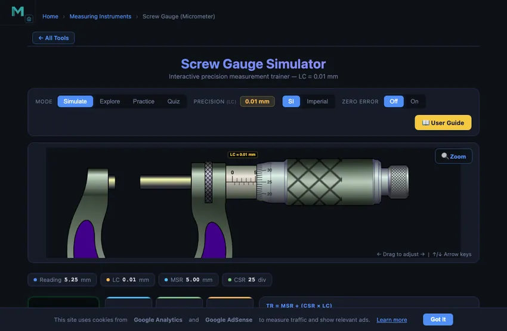

Screw Gauge Simulator
Interactive precision measurement trainer — LC = 0.01 mm
1 Overview
This micrometer screw gauge simulator is a free online tool for practising how to read a micrometer. It supports both SI (metric) and Imperial (inch) micrometers as fully independent instruments. In SI mode, the micrometer has a 0.01 mm least count with 50 thimble divisions. In Imperial mode, a standard 0.001″ least count micrometer with 25 thimble divisions is used. Four modes — Simulate, Explore, Practice, and Quiz — guide you from learning theory to hands-on measurement mastery.
2 Setting the Zero
The simulator opens in Simulate mode with SI units and the micrometer set to a default reading. To begin:
- Drag the thimble left or right to change the measurement. Use arrow keys for fine step adjustments, or Shift+arrow for full-revolution steps (0.5 mm / 0.025″).
- Watch the info row update in real time — it shows the reading, MSR, CSR, LC, and the full TR formula.
- Toggle SI / Imperial to switch between a metric micrometer (0–15 mm) and an inch micrometer (0–1″). The entire scale redraws with correct divisions.
- Use the Zoom button (or press Z) to magnify the reading area where the thimble meets the barrel.
3 Taking a Reading
In Simulate mode the micrometer responds freely to dragging. As you rotate the thimble, observe how the barrel exposes or covers the scale marks, and how the thimble division aligns with the datum line. Audio feedback provides subtle click and tick sounds as you drag. The formula panel shows the step-by-step calculation live. Use this mode to build confidence before moving to Practice.
3b Measuring a Real Object
In Simulate mode, the Measure an object button at the bottom-right of the canvas puts a real workpiece between the anvil and the spindle. Pick from eight parts — steel wire, sheet strip, 1/4″ ball bearing, dowel pin, drill shank, M5 hex nut, shim blade and brass rod.
- Choose a part. It rests against the anvil and the spindle backs fully off, exactly as you would start a real measurement.
- Drag the thimble left (or press ←, or use Close onto part). The spindle stops dead on the part — it cannot be driven through it, whatever you do.
- At contact the part shows green contact marks, a click sounds, and the dimension line beneath it reveals the true size.
- Now read the scales as usual: MSR + (CSR × LC).
Try the 1/4″ ball both ways. It is 6.35 mm exactly, so the metric micrometer reads 6.35 mm and the imperial one reads a clean 0.250″ — same part, same gap, two instruments. Most other parts don't convert so neatly: a 1.62 mm wire is 0.0638″, which a 0.001″ micrometer can only resolve to 0.064″. That gap is the resolution limit, and the object bar spells it out.
Turn Zero Error on while a part is loaded: the spindle still stops at the true size, but the scales read high or low until you apply the correction — the exact trap that spoils real measurements.
4 How the Scale Works
Explore mode is a reference library of micrometer concepts, organised into five categories:
- Parts & Components: An interactive, labelled diagram of the instrument. Hover (or tap) any of the ten numbered callouts — U-frame, anvil, spindle, lock nut, sleeve, main scale, datum line, thimble, circular scale and ratchet stop — and the part lights up on the drawing while its description, specifications and workshop tips appear alongside.
- Micrometer Types: Outside, Inside, Depth, and Digital micrometers — learn the differences, ranges, and applications.
- Least Count: Worked examples for metric (0.01 mm) and imperial (0.001″) with the LC formula.
- Zero Error: No error, positive error, and negative error with correction formulas and procedures.
- Reading Method: Step-by-step guide — read MSR, find CSR alignment, calculate TR, avoid common errors.
Click any card in the grid to view its detailed information panel below.
5 Practice Readings
Practice mode offers two drills side by side, and starting one ends the other so there is only ever a single target:
- Play / Pause — click Play to animate the micrometer, then Pause to freeze it at a random reading. Read the scales and type the total reading.
- Measure an object — loads a random workpiece against the anvil. Close the spindle onto it (drag, ←, or Close onto part), then read the scales. Check stays greyed out until the faces are genuinely in contact, so the measuring step cannot be skipped.
Instant feedback with sound follows Check, and only then is the part's true size revealed. New starts the next challenge and hands the bar back to the Play drill. Your running score is displayed.
Quiz mode: a sequence of 5 questions, of which at least two are always object-measuring tasks — the rest preset the spindle for you to read. For an object question the part arrives with the spindle backed off and Submit stays locked until you have closed onto it. After all 5, a results panel shows your score with star ratings and a row-by-row breakdown. Quizzes work in both SI and Imperial, with or without zero error.
Different parts, different sizes. Practice and Quiz draw from a separate set of workpieces to the ones in Simulate, so a size you have already met cannot simply be recalled — it still has to be measured.
6 Understanding the Reading
The micrometer reading has two components:
- MSR (Main Scale Reading): In SI, count the whole and half-mm marks on the barrel. In Imperial, count the 0.025″ marks.
- CSR (Circular Scale Reading): The thimble division aligning with the datum line. Multiply by the LC.
SI example: Barrel shows 5.5 mm, thimble reads 23 → TR = 5.5 + (23 × 0.01) = 5.73 mm.
Imperial example: Barrel shows 0.275″, thimble reads 14 → TR = 0.275 + (14 × 0.001) = 0.289″.
7 SI vs Imperial Micrometer
This simulator includes two fully independent instruments:
- SI (Metric): Pitch = 0.5 mm, 50 thimble divisions, LC = 0.01 mm, range 0–15 mm.
- Imperial (Inch): Pitch = 0.025″, 25 thimble divisions, LC = 0.001″, range 0–1″. Barrel divided into 40ths of an inch.
Toggle between them using the SI / Imperial pills. The entire scale, tick marks, labels, readouts, formula, and practice/quiz answers update automatically.
8 Zero Error Simulation
The Zero Error control in the toolbar is off by default. Switch it On to simulate a miscalibrated micrometer, then use the − / + stepper to set an error of up to ±5 least-count divisions (i.e. ±0.05 mm in SI or ±0.005″ in Imperial).
- The simulator treats the canvas reading as the observed value. The yellow Zero Error card shows the calibration offset; the green Corrected card shows the true measurement: Corrected = Observed − Zero Error.
- In Practice and Quiz modes, each question is generated with a random zero error so you must subtract it from the observed reading before entering your answer.
- Turn the toggle Off at any time to return to a perfectly calibrated instrument.
9 Tips & Best Practices
- Always check for zero error before measuring — close the spindle onto the anvil and verify the reading is exactly 0.00 mm (or 0.000″).
- Use the ratchet stop (on a real micrometer) to apply consistent measuring force.
- Pay careful attention to the half-millimetre mark (SI) or the 0.025″ mark (Imperial) — missing it causes a 0.5 mm or 0.025″ error.
- Practice with both unit systems to prepare for different micrometers in exams and industry.
- Use Explore mode to review theory and formulas before attempting Practice or Quiz.
- Load a real workpiece (the Measure-an-object button) and close onto it — feeling the spindle stop on the part is the habit that transfers to the real instrument.
How to Use a Micrometer Screw Gauge — Online Reading Practice

A micrometer screw gauge is a precision measuring instrument that measures small lengths and diameters with a least count of 0.01 mm. It is widely used in machining, quality control, and metrology. This free online simulator lets you practise reading the barrel (sleeve) and thimble scales without needing a physical instrument.
Step-by-Step: How to Read a Micrometer
Step 1 — Main Scale Reading (MSR): Read the last visible millimetre and half-millimetre mark on the barrel that is exposed by the thimble edge. Step 2 — Circular Scale Reading (CSR): Read which thimble division aligns with the datum line on the barrel. Step 3 — Total Reading: Apply TR = MSR + (CSR × 0.01) mm.
Micrometer Screw Gauge Principle
The micrometer uses the screw principle: one full rotation of the thimble advances the spindle by 0.5 mm (the pitch). With 50 divisions on the thimble scale, each division = 0.5 ÷ 50 = 0.01 mm — the instrument's least count.
Micrometer vs Vernier Caliper
A micrometer screw gauge offers higher precision (0.01 mm) than a standard Vernier caliper (0.02 mm). It is the preferred tool for measuring wire diameters, sheet thickness, ball bearing sizes, and any component where sub-0.1 mm accuracy is required.
Micrometer Screw Gauge Parts and Functions
An outside micrometer is built from ten recognisable parts. Switch the simulator to Explore → Parts & Components for a labelled diagram where each one lights up as you hover it; the table below is the same information in reference form.
| # | Part | Function |
|---|---|---|
| 1 | U-frame (C-frame) | Drop-forged rigid backbone; any flex appears directly in the reading. Carries heat-insulating pads. |
| 2 | Anvil | Fixed measuring face, carbide-tipped and lapped flat; the workpiece rests against it. |
| 3 | Spindle | Moving face on a precision 0.5 mm-pitch screw — one thimble turn = 0.5 mm of travel. |
| 4 | Lock nut | Clamps the spindle so the reading cannot drift while you withdraw and read. |
| 5 | Sleeve (barrel) | Stationary tube carrying the datum line and main scale. |
| 6 | Main scale | Whole millimetres above the datum line, half-millimetres below; read what the thimble edge exposes. |
| 7 | Datum (index) line | The reference line — the thimble division sitting on it is the CSR. |
| 8 | Thimble | Knurled sleeve fixed to the spindle; its bevelled edge is the cursor for the main scale. |
| 9 | Circular scale | 50 divisions × 0.01 mm around the thimble bevel (25 × 0.001″ imperial). |
| 10 | Ratchet stop | Slips at a preset force (≈5–10 N) so every operator closes with the same pressure. |
Measuring Real Objects — Practise on Parts, Not Just Numbers
Reading the scales is only half the skill; the other half is closing the spindle onto the work correctly. Simulate mode lets you clamp eight real workpieces in the gauge — steel wire, sheet strip, a 1/4″ ball bearing, a dowel pin, a drill shank, an M5 hex nut, a shim blade and a brass rod. The spindle physically stops on the part and cannot be driven through it, so closing it teaches the same feel as the real instrument, and the sizes are realistic rather than convenient: an 8 mm dowel is ground a few microns under, sheet stock runs under its nominal gauge, and the drill shank is deliberately undersize so it enters a chuck.
The 1/4″ ball is worth trying in both unit systems. It is 6.35 mm exactly, so the metric micrometer reads 6.35 mm and the imperial one a clean 0.250″ — the same part and the same gap read by two different instruments. Most sizes do not convert so neatly: a 1.62 mm wire is 0.0638″, which a 0.001″ micrometer can only resolve to 0.064″. That difference between the true size and the reading is the instrument's resolution limit, and the simulator points it out whenever it applies.
The same parts are graded. Practice adds a Measure an object drill beside Play/Pause, and every Quiz sets at least two object tasks among its five questions. In both, Check or Submit stays locked until the faces are genuinely in contact, so the measuring step cannot be skipped by guessing, and the true size is withheld until your answer has been marked. Graded exercises also draw from a different set of workpieces to the ones in Simulate. Switch Zero Error on and the spindle still stops at the true size — but the scales read high or low until you subtract the error, exactly the discipline the real instrument demands.
A 12.34 mm Pin — The Cleanest Possible Reading
Take a steel pin that nominally measures 12.34 mm. Drag the simulator’s thimble until the spindle just touches a virtual pin of that size and read it out. The arithmetic is one line:
| Step | What you read | Value |
|---|---|---|
| 1 | Last visible mm mark on the sleeve (left of thimble edge) | MSR = 12 mm |
| 2 | Half-mm mark visible? (no — the thimble edge sits before the 12.5 line) | + 0 mm |
| 3 | Thimble division aligned with the datum line | CSR = 34 |
| 4 | Convert CSR to mm | 34 × 0.01 = 0.34 mm |
| 5 | Total reading TR = 12 + 0 + 0.34 | 12.34 mm |
The half-mm gotcha is the one students miss. The thimble completes one full revolution every 0.5 mm, so the same CSR = 34 appears at both 12.34 mm and 12.84 mm — the only difference is whether the half-millimetre mark is exposed on the sleeve. If it is visible, add 0.5 mm to the whole-mm reading first: 12.5 + (34 × 0.01) = 12.84 mm. Practise it ten times in the simulator and the rule becomes automatic.
Five Mistakes That Show Up in Every Lab
- Forgetting the half-mm mark. Above. Reads 0.5 mm too low or too high.
- Misjudging zero error. Close the jaws and read the thimble before measuring anything. If the zero on the thimble does not line up with the datum line, you have a zero error. Subtract a positive error from every reading; add a negative error.
- Over-tightening with the main thimble. All quality micrometers have a small knurled ratchet at the end of the thimble. Use it for the final closing — it clicks three times and stops. Spinning the main thimble with two fingers compresses soft parts, deforms the spindle, and gives a reading that depends on the operator’s grip.
- Reading the wrong side of the half-mm line. The half-mm marks on most modern micrometers are below the mm marks, slightly offset. In poor light they look like wear marks. The simulator’s zoom view makes this distinction clear.
- Measuring a hot workpiece. Steel grows 0.012 mm per 100 mm per 10 °C. A part fresh off the lathe at 50 °C measured against a micrometer at 20 °C reads 0.04 mm too long over a 100 mm length. Let parts equalise.
Micrometer vs Vernier — When to Pick Which
| Situation | Pick | Why |
|---|---|---|
| Length tolerance ~0.05 mm | Vernier | Adequate precision, much faster reading |
| Length tolerance ~0.01 mm | Micrometer | Vernier 0.02 mm cannot resolve it |
| Internal diameter | Vernier (inside jaws) or bore micrometer | Standard micrometer only measures external dimensions |
| Length > 25 mm beyond the micrometer’s range | Vernier or larger-range micrometer | Each micrometer covers 25 mm; a 0−25, 25−50, 50−75 etc. set |
| Wire diameter | Micrometer | The wide flat anvil is precisely the right contact geometry |
| Tube wall thickness | Micrometer with ball anvil | Cylindrical wall has to be measured radially |
Micrometer Practice for US CTE and NIMS Programs
In American machine shops and technical schools, this instrument is simply called a micrometer or outside mic — shorthand for outside micrometer. The formal name “screw gauge” is more common in British, South Asian, and Commonwealth curricula. Both describe the same instrument; the reading method is identical regardless of which name you learned first.
The NIMS (National Institute for Metalworking Skills) Measurement, Materials and Safety credential — the baseline qualification for US machining apprenticeships and CTE manufacturing pathways — requires students to demonstrate accurate micrometer readings to 0.001″ (one thousandth of an inch). This simulator’s Imperial mode (SI / Imperial toggle) replicates exactly that: a 0–1″ outside micrometer with 25-division thimble, fixed LC = 0.001″, and full zero error simulation. The Practice and Quiz modes replicate the read-and-report format used in NIMS practical assessments.
For students in NCCER Machining Level 1 or state-adopted precision machining CTE courses, the same 0.001″ reading requirement applies. Many US community college manufacturing programs use the Precision Machining Technology curriculum (aligned with SME and NIMS standards), where micrometer proficiency appears in the very first module alongside steel rule and vernier caliper skills.
US shop practice uses inch-system micrometers as the default in most manufacturing sectors, particularly automotive, aerospace, and defence — though metric micrometers are required when working to ISO drawings. Switching between the two in this simulator builds the fluency that US machinists need when crossing between domestic and export-spec jobs.
Calibration & Standards
- ISO 3611:2010 — Geometrical product specifications (GPS) — Dimensional measuring equipment: Micrometers for external measurements — Design and metrological characteristics. Defines the permissible maximum errors at each measuring length.
- ASME B89.1.13-2013 — Micrometers. The US standard (American Society of Mechanical Engineers) governing accuracy, calibration intervals, and permissible errors for outside, inside, and depth micrometers used in US manufacturing and inspection.
- BS 870:2008 — the British Standard for external micrometers; still cited in UK and Commonwealth engineering curricula.
- JIS B 7502 — the Japanese standard, often referenced for Mitutoyo and Mitutoyo-derivative instruments.
- Calibration practice: a 1″ (25 mm) range outside micrometer should be checked against NIST-traceable class-1 gauge blocks at 0, 0.200, 0.400, 0.600, 0.800, and 1.000″ at least annually for shop-floor use. US metrology labs typically calibrate to ANSI/NCSL Z540 or ISO 17025 requirements.
Explore Related Simulators
If you found this Micrometer Screw Gauge simulator helpful, explore our Vernier Caliper simulator, Dial Gauge simulator, Tolerance & Fits calculator, and Thread Nomenclature trainer for more hands-on practice.
3D Model — Screw Gauge Simulator
Interactive 3D model of this apparatus. Pick a component on the right, then drag to rotate · scroll to zoom · right-drag to pan.